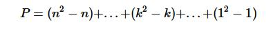
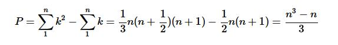
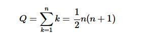

线性代数的核心问题是解联立线性方程组。未知数的个数与方程的个数相等的联立方程组,是最重要的也是最简单的,我们就从这样的联立方程组讲起。
而对于解联立方程组,主要有如下2种不同的方法:
- 消去法
- Cramer(克莱姆)规则
对于消去法,先消去第1个方程以外各方程中的第1个未知数。其操作如下:
- 从每个方程中减去第1个方程的适当倍数,这样我们就得到1个n-1个未知数,n-1个方程的方程组。
- 对新得到的变小的方程组再应用上述的方法。
- 重复上述方法,直到得到1个未知数1个方程的方程组,此时得到了方程组的解。
- 通过反向代入的方式回推方法带入到原方程中,求出所有的未知数。
可以发现这个重复的过程完全可以通过程序来实现。
而对于第2种方法,则更为理论一些,需要用到行列式,得到的是精确解,是2个n阶行列式的比,这个比称为Cramer规则。
事实上,对于数值大的n,Cramer规则不可能实际应用,而对于实际中遇到的方程组,即使n够大,消去法也可以求出它的解来。一般情况下,我们称第1种方法为Gauss(高斯)消去法。
Gauss消去法很简单,可能在以往的学习或考试中你已经很熟悉了,但是这里我们将注意力放在消去法本身及以下的4点:
- 消去法可以解释为系数矩阵的因式分解。我们引入联立方程组的矩阵表示,将n个未知数记为向量x,而将n个常数记为向量b,而全体系数为矩阵A,那么联立方程组可以表示为Ax=b。在这样的表示方法下,消去法相当于把矩阵A分解为下三角矩阵L和上三角矩阵U的乘机LU。
- 在大多数情况下,消去法可以原样应用,不产生任何困难就可以得到方程组的解。但是有1个情况是例外的:
- 方程在组中的次序要变动,只有变动之后才可以得到方程组的解
- 方程组Ax=b除了唯一解外,可以无解,也可能有无穷多解。通过消去法本身可以判断出是无解还是无穷多解。
- 方程在组中的次序要变动,只有变动之后才可以得到方程组的解
- 使用消去法解方程组时,有必要对所需的算术运算次数进行估计。在许多实际问题中,所引进的未知数的个数都是由数学模型的准确程度和运算次数共同决定的。
- 需要直观的考察舍入误差对解x的影响是否显著,对于影响显著的问题,就应当设法控制舍入误差,否则经过成千上万次的运算后所得到的解却发现完全没有意义。
下面我们来看1个简单的例子,1个三维方程组:
2u+v+w = 1 4u+v = -2 -2u+2v+w=7
下面我们用Gauss消去法来求解未知数u,v和w的值。做法是从第2个第3个方程中减去第1个方程的适当倍数,使得第2和第3个方程中的u被消去,换句话说进入如下的操作:
- 从第2个方程中减去第1个2倍
- 从第3个方程中减去第1个的-1倍
结果我们得到了等价的方程组:
2u+v+w = 1 -v-2w = -4 3v+2w = 8
第1个方程中的u的系数2称为消去法第1步的主元素。
而消去法的第2步不考虑第1个方程,剩下的是含有未知数v和w的2个方程。对这2个方程我们按照第1步再进行消去,这一步得到的主元是-1。
接着,我们要从其余的方程中减去第2个方程的倍数,这里只有1个第3个方程了,以此消去v,我们进行如下的操作,从第3个方程中减去第2个方程的-3倍,正向消去已经完成了。结果得到了1个化简了的方程组:
2u+v+w = 1 -v-2w = -4 -4w = -4
此时该方程组的解法很明显,我们由最后1个方程可以得到w=1。将w带入第2个方程得到v=2,而将w=1和v=2代入第1个方程得到u=-1。我们将这个代入的过程称为反向代入。
我们可以将上述的求解过程推广到n个未知数n个方程的情形,不论n有多大都可以。
下面我们来总结下Gauss消去法的操作过程:
- 第1步利用第1个方程的倍数消去第1个主元素正下方的所有系数。
- 第2步消去第2列中第2个主元素正下方的所有系数,以此类推。
- 最后得到1个含有1个未知数的1个方程。
- 我们反向代入按反次序得到答案,最先得到的是最后1个未知数,然后是倒数第2个,最后是第1个未知数。
下面我们来看2个问题,通过这2个问题会让我们对消去法本身有更进一步的理解。
第1个问题是,用消去法一定能得到方程组的解吗?在什么条件下消去法是行不通的?
其结果是,如果主元素都不为零,那么方程组就有唯一解,可用正向消去和反向代入求得。而当遇到主元素为零的情况,那么消去法就无法进行了。
需要注意的是,即使构成主元素的系数在原方程中本来不为0,经过消去法的一步或几步之后也可能遇到为0的主元素。因此我们可以粗略地说,不到消去法进行到最后一步,我们都无法回答主元素是不是都不为0。
而当遇到主元素为0时,在多数情况下,经过调整,仍然可以用消去法求得方程组的唯一解。当然,无法方程组无解或者有无穷多解时,消去法肯定是不能进行到底的。
当遇到为零的主元素时,我们需要将它所在的方程与下面的方程对调,然后继续进行消去。
第2个问题很实际,是关于算题费用的。我们通过消去法解n个未知数n个方程的方程组,需要进行多少次算术运算?
如果n很大,那就必须由计算机来完成消去法,由于步骤是事先知道的,因而也能够事先计算出所需的机器时间。
我们先暂时不管方程组右端的部分,只对左端所需的计算次数进行估算。这里的运算主要有2类:
- 除法,用于确定从主元下面的方程中应减去主元所在方程的倍数,比如l倍。
- 先乘后减
在进行2个方程相减时,我们要做的是先乘后减,即用上面提到的l乘以主元所在的方程,再从主元下面的方程中减去乘上了l的主元所在方程。
我们约定把每1个除法和每1个先乘后减的过程称为1次运算。
第1步时,第1个方程的长度是n,每消去第1列的1个元素,需要做n次运算,其中求倍数需要1次操作,而算出被消去元素所在行的新元素需要n-1次。
此时,第1行下面共有n-1行,要消去的元素是n-1个。因此,消去法第1步要进行n(n-1)次运算。在完成了第1步后,第1行第1列可以先暂时不管。
接着我们进行第2步时,方程和未知数的个数都是n-1。接下去每做1步方程和未知数的个数都减1,运算次数也随之减小。到剩下k个未知数k个方程时,消去主元素正下方元素所需的运算次数是k(k-1)。
因此,方程组左边部分所需的算术运算总次数P为:

需要注意的是,最后一步,即1个未知数1个方程时,不需要进行计算,我们可以算出和数P的大小为:

我们可以用微积分来检验所得结果。x平方从0到n的积分为(n3) / 3,而x从0到1的积分为(n2) / 2,恰好是2个和号下结果的主项。如果n足够大,那么P约等于(n3) / 3就是运算次数的1个很好的估计量。
而反向代入所需运算次数的计算要容易得多。求最后1个未知数所需运算次数为1,而求倒数第2个未知数所需运算次数为2(1个先乘后减1个除)。类推,求倒数第k个未知数所需运算次数为k。
因此反向代入所需总运算次数Q为:

因此,人们曾经认为求解一般n解方程组所需的乘法运算的次数不可能少于(n3) / 3。而实际上,人们找到了1个方法,对于消去法来说需要进行Cnlog2(7)次运算,而常量C比较大,且所需进行的加法次数比较多,而计算机程序又太打杂,因此新方法的重大意义还只是理论上的,实践上代替不了消去法。
参考书籍:
《线性代数及其应用(G.Strang)》P1-5